The saved SteveCAD heat-spreader process opened through the normal workspace Workflows control. This proves saved-process navigation, not engineering compliance or run completion.
Normal local access succeeds without exposing credentials Verified in the served UI.
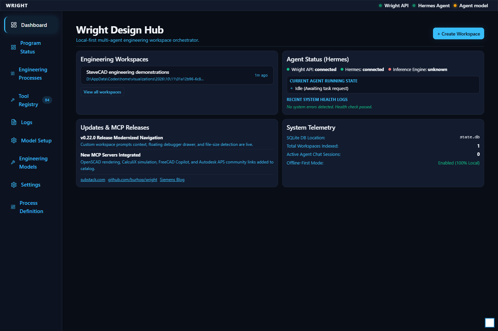
The exact isolated workspace card is visible Verified in the served UI.
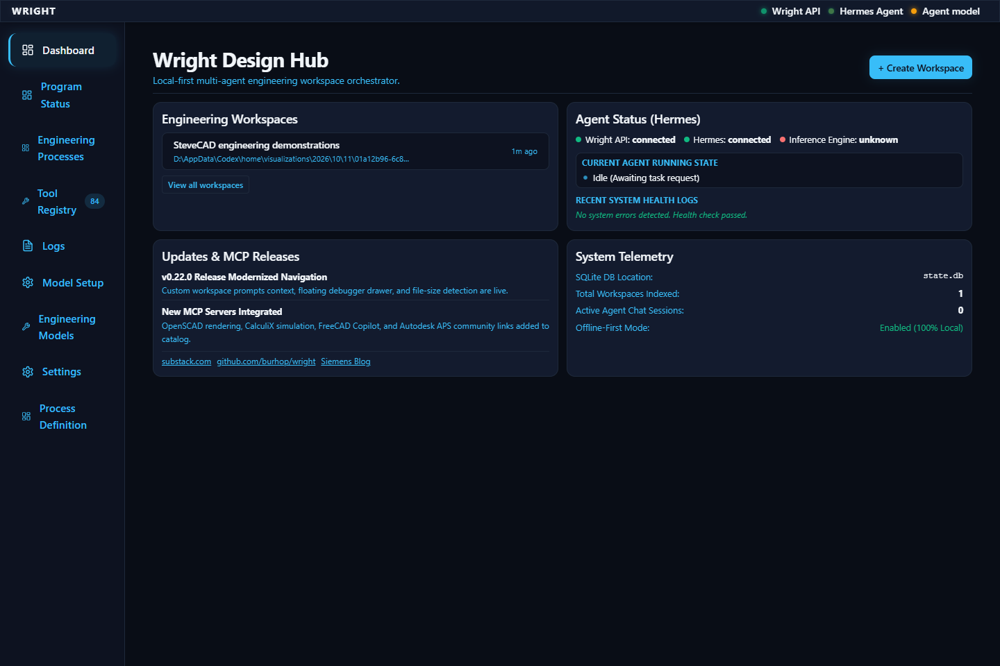
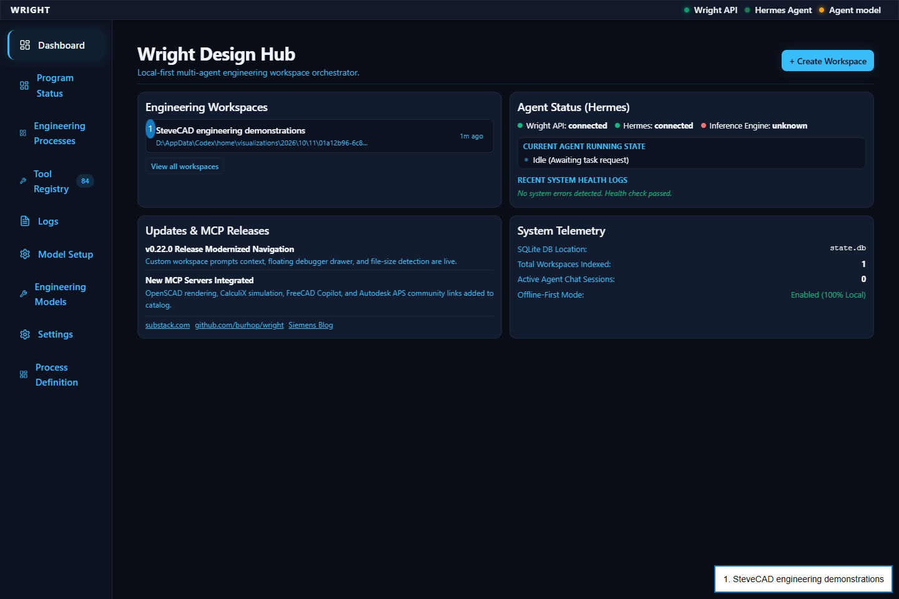
The workspace opens with its Workflows control Verified in the served UI.
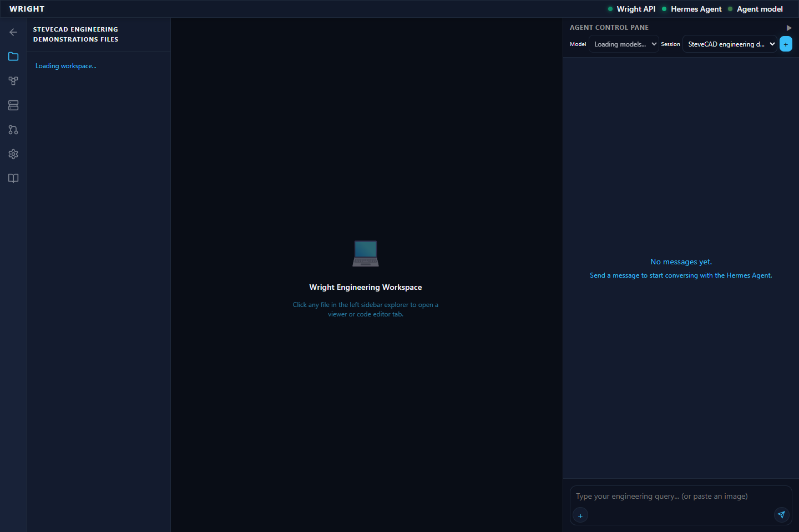
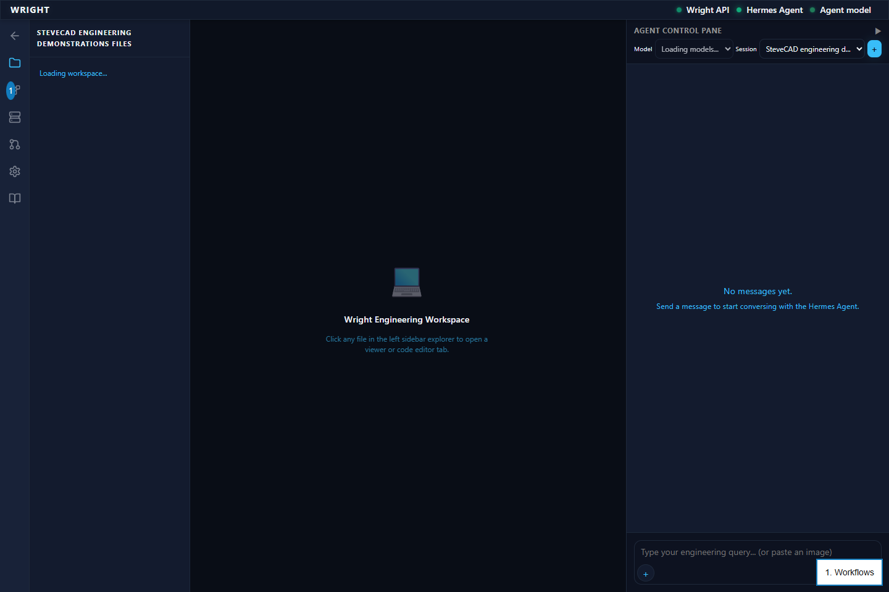
The preserved workflow editor opens in the workspace Verified in the served UI.
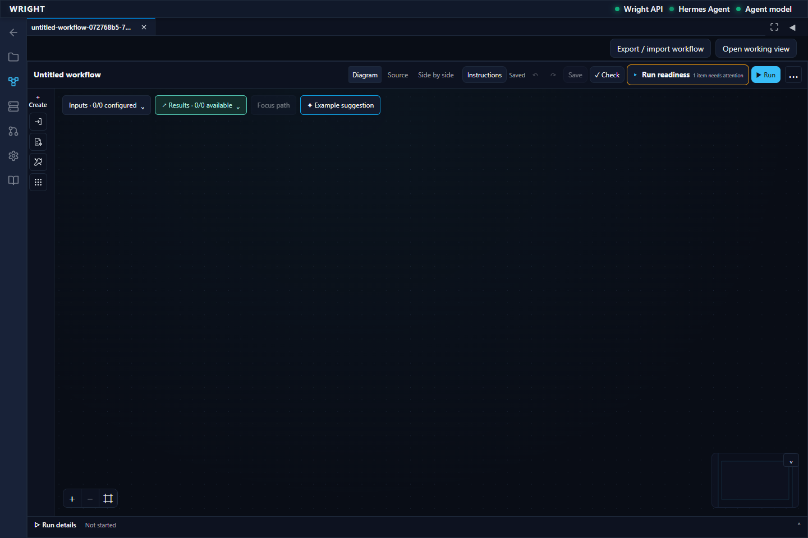
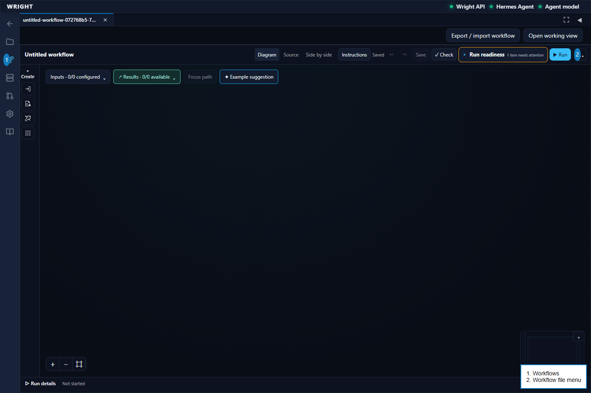
The saved thermal process is listed Verified in the served UI.
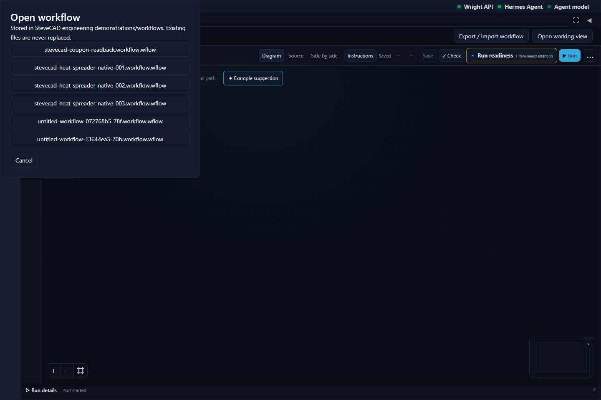
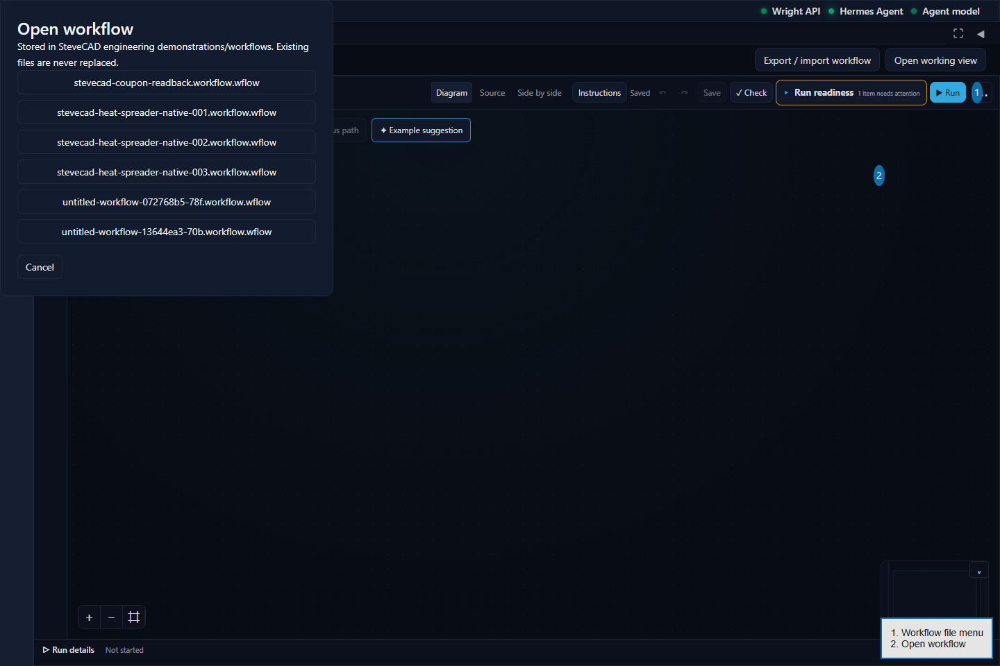
The exact saved heat-spreader process opens with its authoring and working-view controls Verified in the served UI.
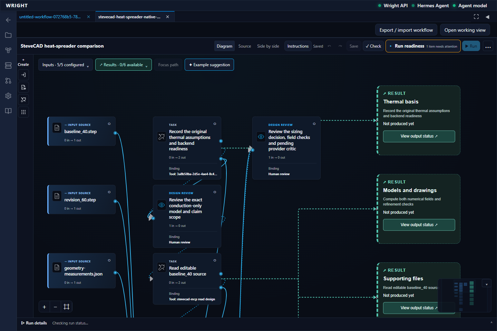
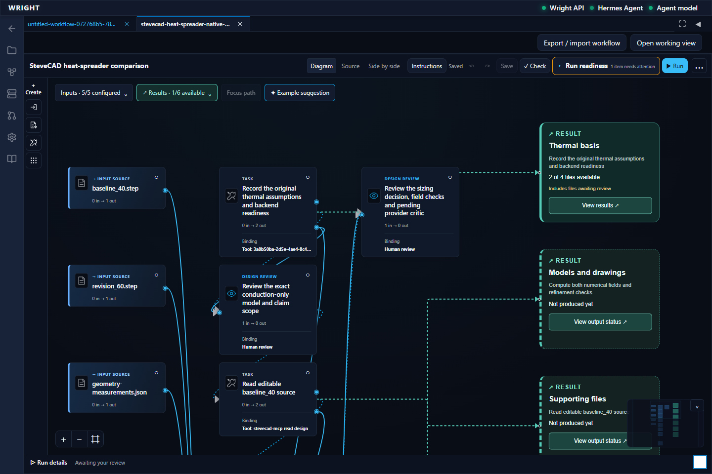